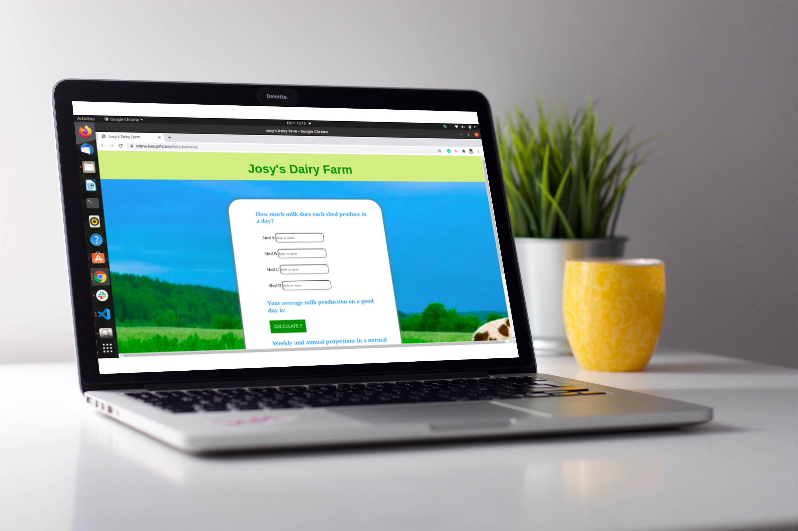

PROJECTS
These are my most recent projects
-

This is a Calcultor to compute future projections
on milk production.
Click here to view the complete project.Technologies used: HTML, CSS, JS
-
Makao Solutions is a house hunting site.
Check it OutTechnologies used: HTML, CSS, JS
-

Anitas Kitchen is a Menu Website, displaying
all the available meals and drinks in the
codewwwdrestaurant.
View the siteTechnologies used: HTML, CSS